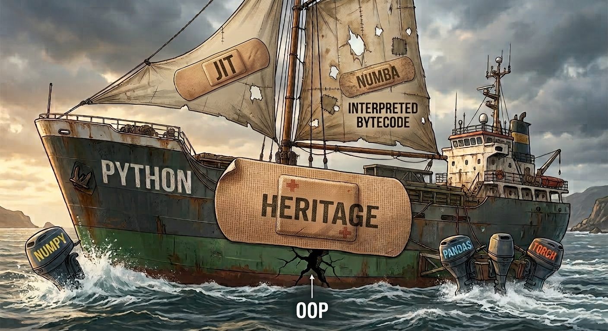
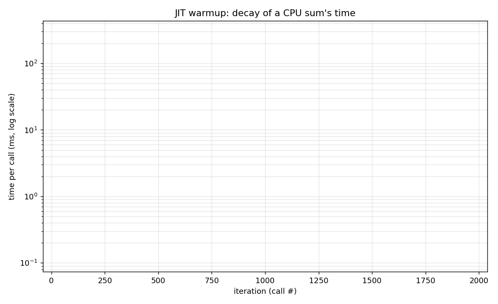
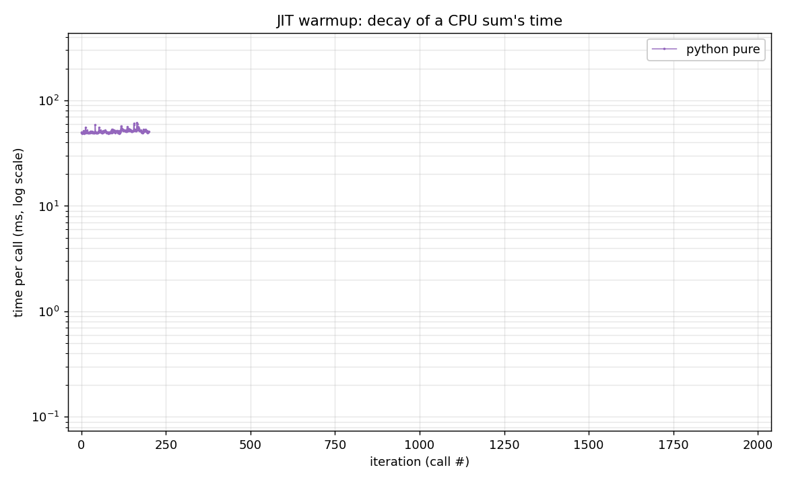
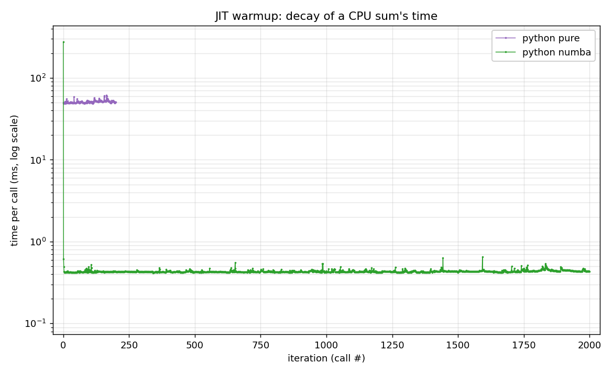
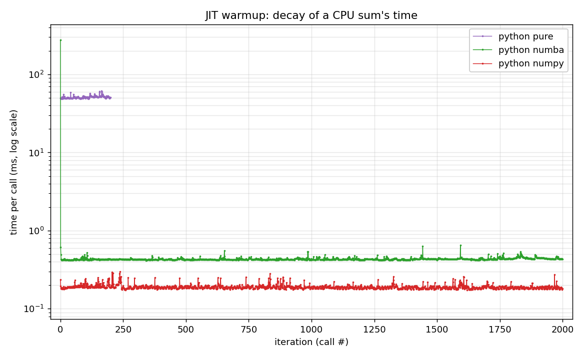
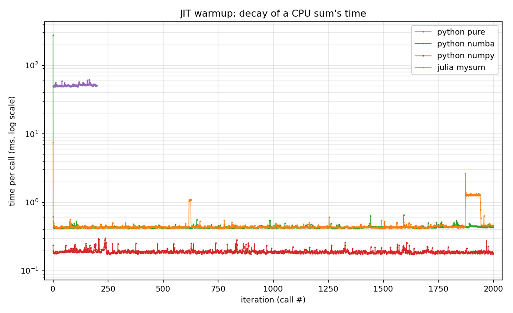
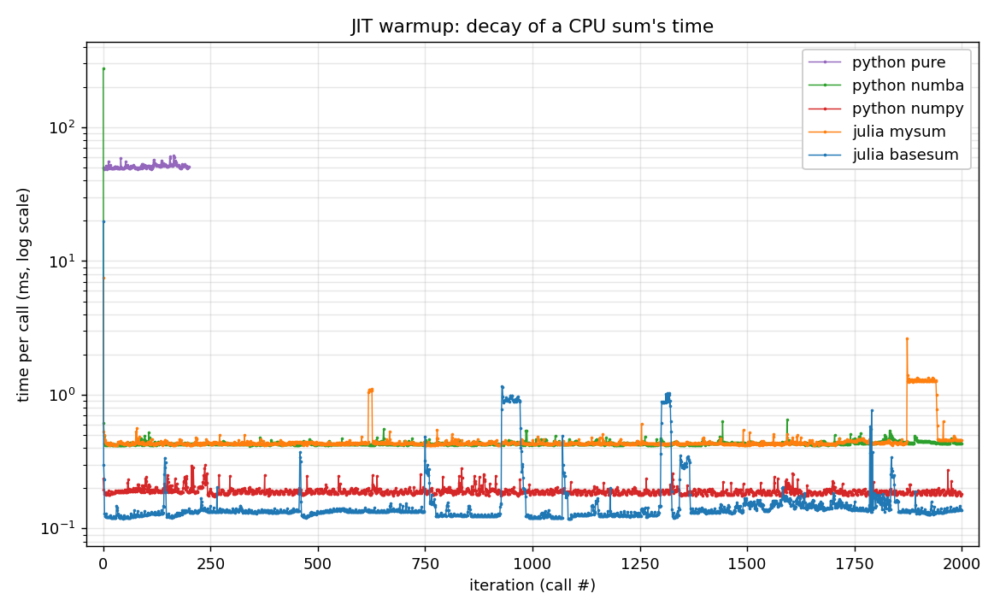

Compilation, JIT and warmup

▶ Notebook (demo + solution): Interpreted vs compiled
⬅ Previous: 0 — Julia for Python users · Next: 2 — Multiple dispatch vs OOP ➡
numba @njit, numpy, Julia mysum (loop), Julia sum.The question: what happens on the very first call?






| variant | compile spike | plateau |
|---|---|---|
| pure Python | 0 — never compiled | ~50 ms |
numba @njit |
~340 ms | ~0.4 ms |
| numpy | ≈ 0 — precompiled C | ~0.2 ms |
Julia mysum |
~7 ms | ~0.4 ms |
Julia sum |
~20 ms | ~0.1 ms |
The spike is the JIT compiling — paid once, then amortized. Pure Python has no spike, but its plateau stays slow (never compiled).
sum (re)compiles per type on first use.Note
Type checked at run time, every operation, on boxed objects (pure Python) = slow; type known at compile time, check eliminated (numba/Julia) = specialized native code = fast… once the warmup is paid.
Three ways to get from source code to the processor:
numpy): everything compiled before execution → fast, zero warmup.The spike we just saw is exactly the JIT compiling.
JIT gives native speed — but there’s a catch: the machine code must be specialized. There is no single “x + y” instruction.
The same x + y becomes different assembly depending on the argument types:
x, y |
machine code for x + y |
|---|---|
Int, Int |
add (integer) |
Float64, Float64 |
vaddsd (float) |
Float64, Int |
vcvtsi2sd + vaddsd (convert, then add) |
Julia’s solution: on the 1st call, compile a native version specialized for the concrete types, then reuse it. Type known at compile time → the check/conversion vanishes from the hot code (≈ C).
Picking the version from the type of all arguments = multiple dispatch (covered in the dispatch module).
@code_warntype (red = Any).@btime / @benchmark.Always discard the 1st call (warmup), then measure the steady state.
We saw Base
sum≈ 5× faster thanmysum(same computation).@code_nativetells us why.
sum beats mysum — 1/2@code_native mysum — the hot loop:
vaddSD = Scalar Double = 1 float at a time, a single accumulator xmm0. → scalar.+ waits for the previous one → a single dependency chain (latency-bound).sum beats mysum — 2/2@code_native sum shows that for N ≥ 16 the work is not inlined:
Inside mapreduce_impl:
vaddPD = Packed Double = 4 floats at once → SIMD 4-wide.ymm0..ymm3 → 16 doubles / iteration, 4 parallel chains (ILP).Warning
Floating-point addition is not associative: (a+b)+c ≠ a+(b+c) (rounding). Without permission, the compiler must keep the order → mysum stays scalar and serial.
sum goes through a reduction that allows reassociation (+ pairwise in blocks of 1024) → the compiler can vectorize and parallelize.@simdA single word lifts the catch — we explicitly allow reassociation:
| variant | time / call |
|---|---|
mysum (scalar) |
42 µs |
mysum_simd (vaddpd ymm) |
4 µs |
Base sum |
8 µs |
It’s not “Julia magic”: what we see is the algorithm (allowed reassociation → SIMD + ILP), not the language.
experiences/warmup_jit/ (warmup.py, warmup.jl).mysum vs sum asm + the @simd counter-test: experiences/sum_vs_size/reflection.jl.⬅ Previous: 0 — Julia for Python users · Next: 2 — Multiple dispatch vs OOP ➡